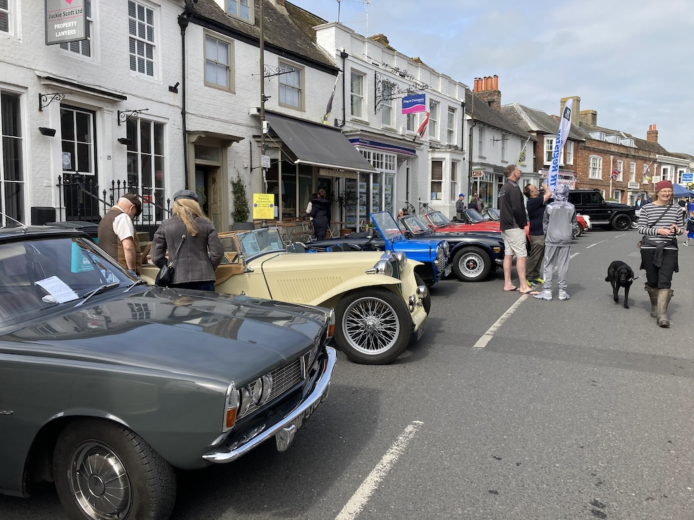
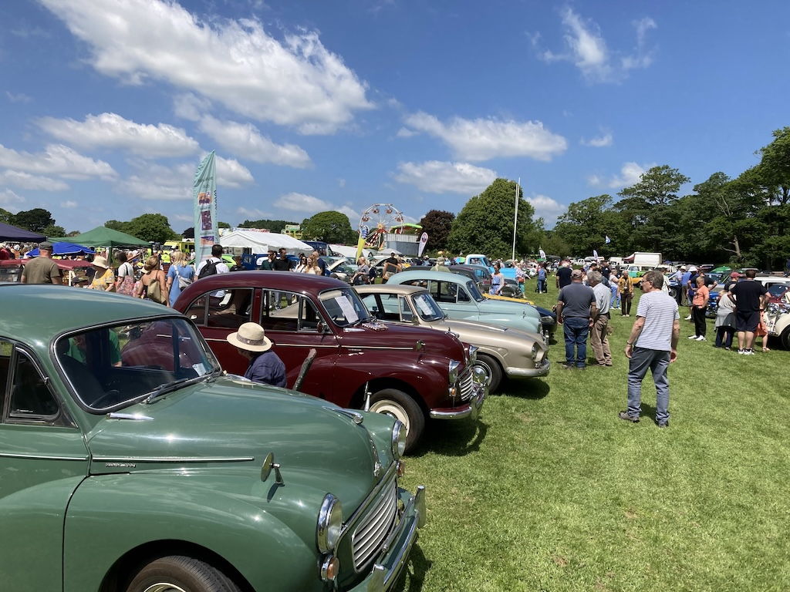
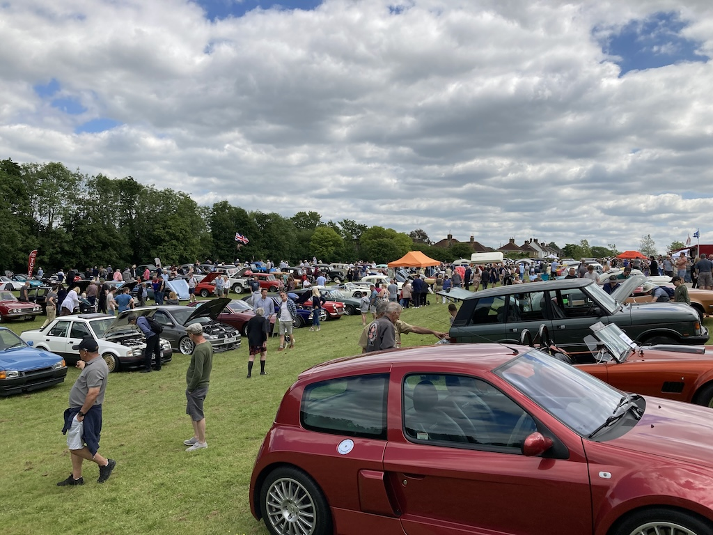
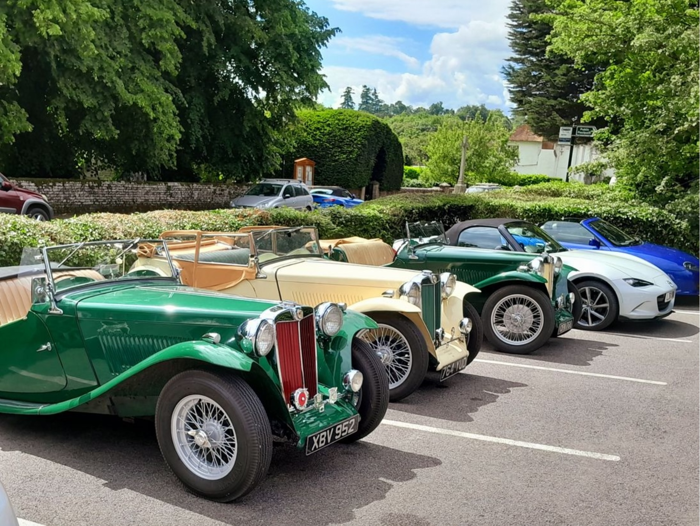

Steyning Vintage Revival - 5th May
Not an outing in the usual sense, just a mile down the road to the High Street. I was late registering and so was allocated a space in the Star pub car park. Luckily I overheard that there had been a cancellation and so was able to move the car into the High Street.
I had my little 'for sale' sign in the window and did get some interest. It was quite interesting talking to some of the other car owners and I escaped into Victoria's Sponge for a coffee.
At the end of the day the Rover next to me wouldn't start (and it was the owner's daily car). So I grabbed some strong-looking men and we pushed it to the side.
Lions Classic Rally, Shoreham - 2nd June
A glorious day and a much bigger event than I had expected. There were a lot of cars and many other attractions; really a family fun day. However, I was there really so as to advertise my car for sale.
I had minimal interest, but took a chair, lunch and a book.
Wheels through the ages, Burgess Hill - 9th June
Another warm, sunny day and another car show. I got lost trying to find the field (not helped by a road closure), but there were a lot of cars, although no other TCs. An SV parked next to me and there was a TD. I was parked in the far corner, beyound the flag.
Lots of people noticed my discreet 'for sale' sign, but no interest. Luckily I had again taken a chair, lunch and my book.
Sussex Wanderers, Warnham to Warnham - 12th June
The first major run of the year, even though it has taken until June to do it. I met David F-B at the Sussex Oak in Warnham where we met up with the rest of the Wanderers and had coffee before going off on the run. As you can see from the photo (extracted from the Wanderers June newsletter), there were three TCs on the run.
It was a fine day and a good run (even the diversion was good), but during the run we could smell petrol. When we got back to the pub I found that the car was spraying petrol all over the road! The hold-up bolt on the rear carburettor had come loose and now the low petrol warning light was on. I was able to tighten the bolt and later, when we left, David followed me to the petrol station at Broadbridge Heath, in case I ran out of petrol.
I did a total of 69 miles, pretty much the same as the last run from/to the Sussex Oak.